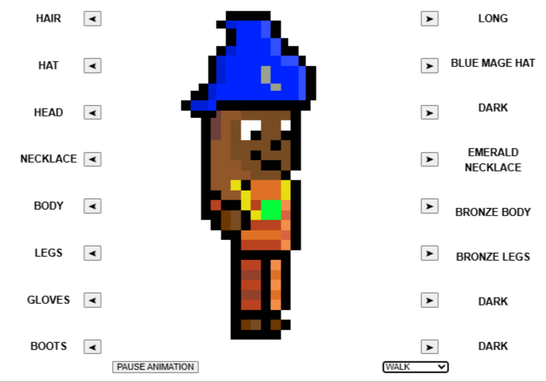

Mapa Interativo
O mapa também possui um sistema de busca, incluindo via parâmetros no url. (A implementação não é convencional pois acomoda certas limitações do chat do jogo)
O código está disponível neste repositório: Interactive Map
Editor de Mapa
O editor possui funções de arrastar e soltar objetos e personagens, edição de itens por meio do botão direito e salvamento via API
O código está disponível neste repositório: Map Editor
Vestiário
- 
O vestuário é capaz de reproduzir as animações do jogo, seu uso principal é decidir qual equipamento usar apenas como acessório visual em um userscript para o jogo criado por mim
O código está disponível neste repositório: Vestiário
Block Render

A ferramenta é capaz de gerar imagens de blocos, meio blocos, escadas e itens, além de comprimir as imagens antes de salvar para maior eficiência
O código está disponível neste repositório: Block Render